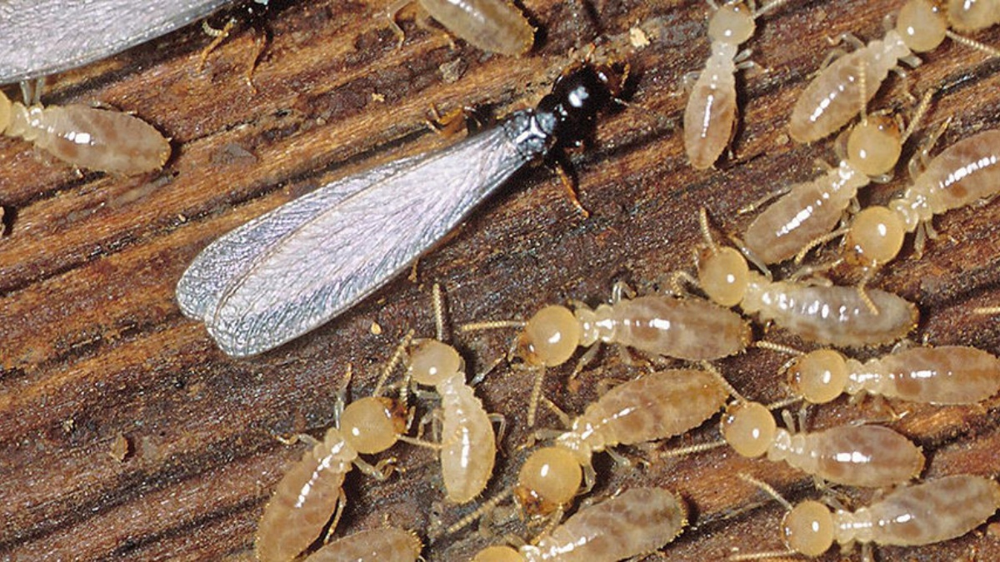

El grupo de las termitas incluye unas 2 500 especies, todas muy abundantes. Normalmente, estos tipos de insectos se alimentan de madera, aunque pueden comer otras sustancias vegetales. Habitan en grandes termiteros que construyen en la madera o el suelo y presentan los sistemas de castas más complejos que se conocen.
Su anatomía depende de las diferentes castas. Sin embargo, todos tienen antenas grandes, patas locomotoras y un abdomen segmentado en 11 partes. En cuanto a las alas, solo aparecen en los reproductores primarios. El resto de castas son insectos ápteros.
 Regreso a la pagina principal